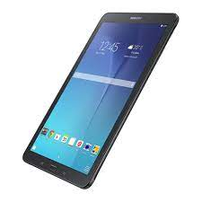

Samsung Galaxy Tab E
Galaxy Tab E es la tablet de gama de entrada de Samsung, de forma que es el modelo más
indicado para ti si lo que buscas es un dispositivo con un precio ajustado y unas prestaciones básicas.
La Samsung Galaxy Tab E está equipada con una pantalla TFT de 9,6 pulgadas con una resolución de 1.280 x 800 píxeles
y una densidad de 157 píxeles por pulgada. Sus dimensiones son de 15 x 1 x 24 cm y tiene un peso de 495 gramos.
Bajo el capó encontramos un procesador Spreadtrum SC7730SE de cuatro núcleos funcionando a 1,3 GHz, acompañado de
1,5 GB de memoria RAM y 8 GB de almacenamiento interno, ampliables hasta 128 GB mediante una tarjeta microSD.
El apartado fotográfico se compone de una cámara trasera de 5 MP y de una frontal de 2 MP.
Su batería tiene una capacidad de 5.000 mAh, pero gracias a la eficiencia energética de su procesador puede ofrecer unas 8 horas de autonomía.
|
Samsung Galaxy Tab A
La Galaxy Tab A (2019) se trata de una tablet equilibrada dirigida a reproducción de contenidos multimedia
y que, tal como pudimos comprobar en nuestro análisis, cuenta con un modo niños muy interesante.
la Galaxy Tab A 8.0 (2019) tiene un panel TFT de 8.0 pulgadas con resolución de 1280 x 800 píxeles.
En el interior encontramos un procesador quad core a 2 GHz, acompañado de 2 GB de memoria RAM y 32 GB
de almacenamiento interno. Está disponible con conectividad WiFi y WiFi + 4G.
|
Samsung Galaxy Tab S3
Samsung Galaxy Tab S3 destaca por su cuidado diseño y materiales. En esta ocasión,
el acabado de la carcasa trasera es cristal brillante inspirado en la generación de
smartphones Galaxy S7 y S7 Edge, que le confiere un aspecto premium. Esta tablet de
gama alta de Samsung equipa una pantalla Super AMOLED de 9,7 pulgadas con una resolución
de 2.048 x 1.536 píxeles. Tiene unas dimensiones de 237,3 x 169 x 6 mm y pesa 434 gramos.
El cerebro de la Galaxy Tab S3 es un procesador Qualcomm Snapdragon 820, que está
acompañado de 4 GB de memoria RAM y 32 GB de almacenamiento interno, ampliable hasta
512 GB mediante una tarjeta microSD. En el apartado fotográfico encontramos una
cámara principal de 12 MP con flash LED, y una cámara frontal de 5 MP.
La batería tiene una capacidad de 6.000 mAh, cuenta con lector de huellas
dactilares y destaca por incorporar un S Pen mejorado.
|
Samsung Galaxy Tab S4
Samsung Galaxy Tab S4 cuenta con una pantalla Super AMOLED WQXGA de 10,5 pulgadas en la
que los biseles se han reducido respecto a la generación anterior. Tiene una resolución de
2.560 x 1.600 píxeles y una densidad de 287 ppp. Sus dimensiones son de 249,3 x 164,3 x 7,1 mm
y pesa 483 gramos.En el interior encontramos un procesador Snapdragon 835 acompañado de
4 GB de memoria RAM y de 64 o 256 GB de almacenamiento interno, ampliable hasta 400 GB con una microSD.
Galaxy Tab S4 tiene compatibilidad con Samsung DeX, por lo que es posible disfrutar de toda la
productividad de un ordenador de sobremesa. Además, el S Pen ha sido mejorado y cuenta con nuevas
funciones interesantes. En el apartado fotográfico tenemos una cámara principal de 13 MP y
una frontal de 8 MP. La batería tiene una capacidad de 7.300 mAh y dispone de carga rápida.
El precio de Samsung Galaxy Tab S4 es de 470 euros en Amazon España para la versión solo con
WiFi y de 569 euros para la opción de WiFi + 4G.
|
Samsung Galaxy Tab S5e
Samsung Galaxy Tab S5e es la propuesta de la marca surcoreana para el mercado de tablets ligeras de gama media alta.
Está equipada con una pantalla Super AMOLED de 10,5 pulgadas con resolución de 2560 x 1600 píxeles.
Bajo el capó encontramos un procesador Snapdragon 670, acompañado de 6 GB de memoria RAM y 128 GB de almacenamiento
interno, ampliable hasta 512 GB mediante una tarjeta microSD.
El equipamiento fotográfico se compone de una cámara trasera de 13 Mpx y de una delantera de 8 Mpx,
y la batería cuenta con una capacidad de 7.040 mAh con carga rápida de 18W.
|
Galaxy Tab S7
Galaxy Tab S7 que viene a romper con todo lo anterior al ofrecer unas prestaciones únicas,
empezando por su increíble batería de de 10.090 mAh. En esta ocasión llega en dos modelos distintos,
Galaxy Tab S7 y Galaxy Tab S7+. El básico tiene una pantalla 11" de tipo LTPS TFT con
resolución de 2.560 x 1.600 píxeles, mientras que la versión S7+ 12,4" con resolución
de 2.180 x 1.752 píxeles. En lo que respecta al procesador, es un Snapdragon 865+,
ambas con 5G, al que acompañan una RAM de 6 o 8 GB y 126 GB 256 GB de almacenamiento interno.
|